Software projects have a lot of people involved in the process:
Clients
Users
Managers
Developers
Designers
Testers
...and each of them has different goals, backgrounds, sensibilities and expectations for the project.
...and software can get really complex involving a lot of different components:
Documents
Workflows
Databases
Interfaces
Code bases
Tests
Servers
...
...and also a lot of variables:
Budget
Time
Quality
Human Resources
Expectations
How do we cope with all this?
We need a PLAN!
The software development lifecycle
A detailed plan consisting of a group of steps that occur in every software project.
Each step has a clearly defined goal and ends with a set of outputs or deliverables.
The outputs of a step are the inputs of the next step.
The software development lifecycle
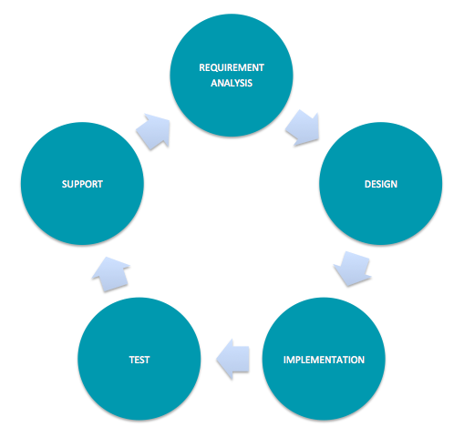
Requirement Analysis
The analysis step aims to:
understand what is the problem
understand the client
understand expectations
determine and document the requirements and objectives of the project
Requirement Analysis
How?
identifying stakeholders (key-people that have a word to say on the project)
interviewing stakeholders and gathering requirements
organize gathered requirements by type (functional, operational, technical)
detail and prioritize requirements
analyse project risks
Requirement Analysis
Design
The design phase aims to describe how the system will work to meet the requirements.
break requirements into small problems
detail how to tackle those problems
describe and document the architectural design
Design
How?
Mockups and prototypes to show the functionality
Wireframes to describe interfaces
Flowcharts to describe business rules
Class diagrams and sequence diagrams to describe the code
Database models to structure data
Test manuals to describe tests
Implementation
Translate the design into code!
Also known as "the fun part" :)
Testing
Test the developed software to answer the following questions:
Does the software have bugs?
Does the software meet the requirements and design?
Does the software perform well?
In sum: Is it ready for production?
Testing - Unit tests
Tests if individual units of code (Classes, Methods) are working correctly
Usually are automated
Each test is independent from the others
Can help to structure the code if the tests are written ahead of the code
Facilitates code refactoring and regression
Remember the Linked List test example?
Unit tests are not enough!
Testing - Integration tests
Tests if the code units work well together to accomplish software features
Aggregate code units to form the software modules that map software features
Top-down approach: Test higher level modules first and work your way down to low-level modules
Bottom-up approach: Test low-level modules first and aggregate modules into higher levels as they pass the tests
Acceptance tests
Test if the software meets the requirements and the client expectations
Predefined tests that can be present in the project contract
Usually conducted by the client or in his presence
Can result in the rejection of the project
Release and Support
This is the last phase of the project and it aims to put it in production
Deploy or release depending on the type of software
Transition from old client processes to the brand new ones
Educate users
Maintenance
Development Methodologies
Development Methodologies
The lifecycle steps are common in all software projects but there are different ways to approach them
Different projects need different approaches
The most known and used methodologies today are the Waterfall and the Agile models
Waterfall model
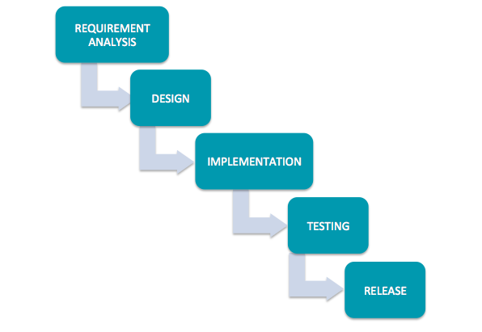
One lifecycle phase does not start while the previous is not completely done
The output of a phase is the input of the next phase
A phase is not over until all stakeholders accept it
Use of functional teams (design team, developer team, sales team...)
Strict structure in which changes to previous phases are difficult and discouraged
Waterfall model
Pros
Extensive documentation as a result of each phase
Most project pitfalls and bottlenecks are discovered and addressed early before a single line of code is written
Strong process of acceptance for all stakeholders
Waterfall model
Cons
Changes in requirements during subsequent phases are hard to implement
Pitfalls not discovered in analysis and design phases can put the project at risk in later phases
Collaboration between functional teams is hard
Waterfall model
Types of projects
When clients know exactly what they want up-front and know how to communicate it
When changes to initial expectations are not an option
When a strict and documented relation between client and developers is needed
Agile model
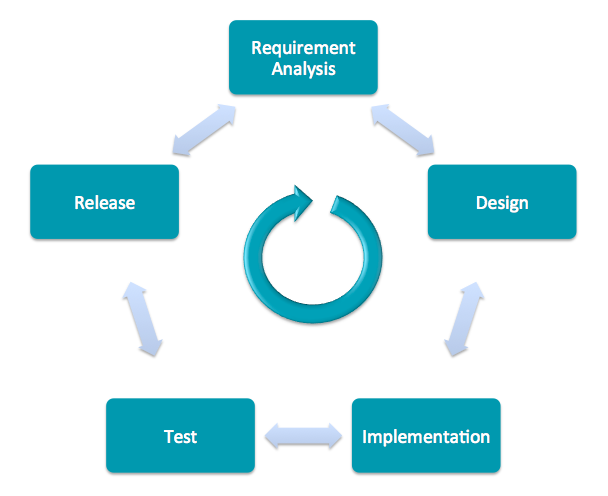
Various iterations of the software lifecycle
A phase can start before the previous has ended.
Feature oriented: One feature can be analysed, designed, implemented, tested and released even before other features are started.
Changes are welcome and seen as a natural process of a product evolution
Privileges working software over extensive documentation.
Use of cross-functional teams (one team can have designers, developers, sales, etc.)
Collaboration between teams and clients is encouraged
Constant release of new features
Agile model
Pros
Clients can see results early in the process
Changes in requirements are not a risk to the project
Focus on quality by constant refactor and refinement
Agile model
Cons
Hard to implement on big organizations
Hard to understand when the project is really over for all stakeholders
Agile model
Types of projects
When clients don't really know exactly what they want up-front
When requirements and environment variables are probably changing during the project
When the client is up for close collaboration on the project
Agile model variations
In fact, the Agile model is more of a manifesto for software development projects. The manifesto is followed by a lot of different methodologies like Scrum and Lean.
Scrum
Follows the agile manifesto implementing it by a set of Events, Roles and Artifacts
It's a more recent approach to software development than the classic Waterfall model
Scrum - Roles
Each scrum team has 3 different key roles:
Product Owner - Represents the stakeholders and is business oriented
Scrum Master - Interface between the product owner and the rest of the team. Manager of the scrum process within the team
Development team - Responsible for delivering the product
Scrum - Events
Scrum key events are:
Sprint - Is a development unit effort. It aims to analyse, design, develop, test and release (the whole lifecycle!) a single new feature, module or unit. It has limited time duration usually between 1 and 4 weeks
Sprint planning - Meeting that marks the beginning of a new sprint that aims to plan the Sprint.
Daily Scrum - Daily small meeting where team members quickly explain what they did yesterday, what they'll do today and what are the current problems and obstacles on their work
Sprint Review - Meeting that marks the end of a sprint where team members discuss and take lessons from it
Scrum - Artifacts
Scrum artifacts are the documentation that supports the scrum process
Project Backlog - The list of tasks to be done until the end of the project. Tasks can be features, bug corrections, knowledge acquisition, etc.
Sprint Backlog -The group of tasks to be done until the end of the current sprint
Product Increment - All the tasks done during the previous sprints
Sprint Burn-Down Chart - Graphical representation of the status of the current sprint.
Scrum - Artifacts
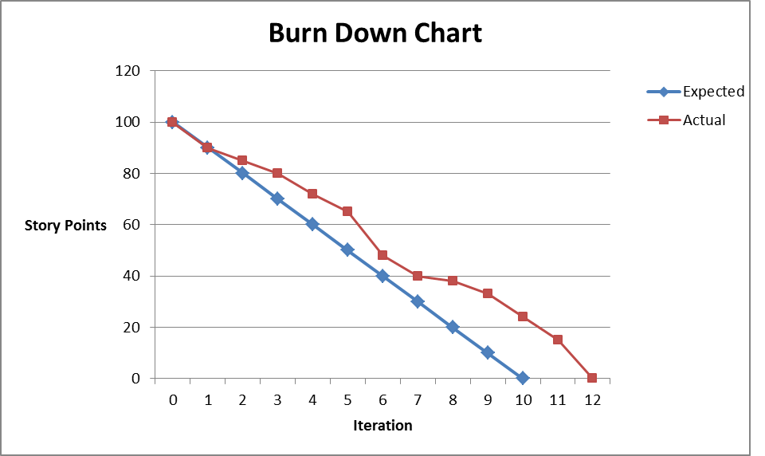
Each task has a score. The higher the score, the more difficult is the task
The sprint points are the sum of each task score
When a task is finished, its score is discounted on sprint points until it hits 0!
Time-boxed Sprint Lengths
When sprints are too long then releases become infrequent (deferring revenue) and the team is forced to wait too long before being able to adapt to changing customer needs
if sprints are too short, big features need to be arbitrarily chunked into smaller tasks, which aren’t useful to the customer on their own & can obfuscate what the team is trying to achieve
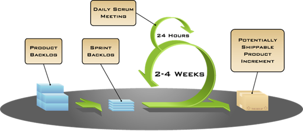
Kanban
Kanban has no sprints and puts limits on how many features a team can work on at a given time.
As soon as a feature is completed – two things happen:
The feature is available for immediate release into production
The team can start working on whatever the next highest priority item is
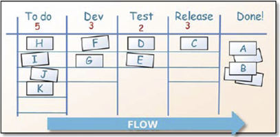
Lean Development
A new fashionable approach that is being adopted essentially by startups.
Used when trying to build a new product/business from scratch but the market is not well understood and detailed requirements for the project can't be defined.
The lean development methodology approaches those problems by promoting a very quick cycle of development where the objective is to test the market to know if a product or a feature can be well accepted by future users.
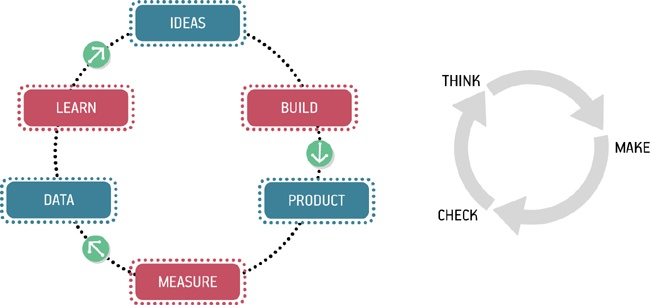
Exercise
For the following three projects what do you think is the best development methodology for each one? Why?
1 - A Big multi-company project that aims to develop the software for a spaceship that will land on Mars.
2 - You have a new idea for a system that can revolutionize the way how people learn to code! You still don't know how it will work and you only have money for one developer - you!
3 - A Book company is well established in the physical world but is now aiming to expand its business to the web. They still don't have a clear idea of how they will do it and they hire you and your team to help them.
Unified Modeling Language
UML is a standard language for specifying, visualizing, constructing, and documenting the artifacts of software systems
UML is not a programming language, but tools can be used to generate code in various languages using UML diagrams. UML has a direct relation with object-oriented analysis and design
Use case diagram
Class diagram
Sequence diagram
Deployment diagram
Component diagram
Activity diagram
Statechart diagram
Use Case Diagram
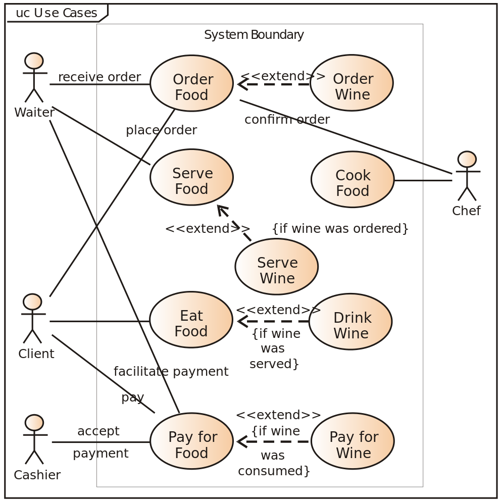
Documents the user interaction with the system
Class Diagram
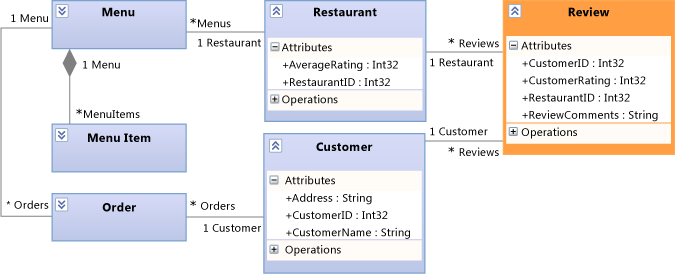
Documents the structure of a system
Sequence diagram
Documents the collaboration between entities based on a time sequence
Deployment diagram
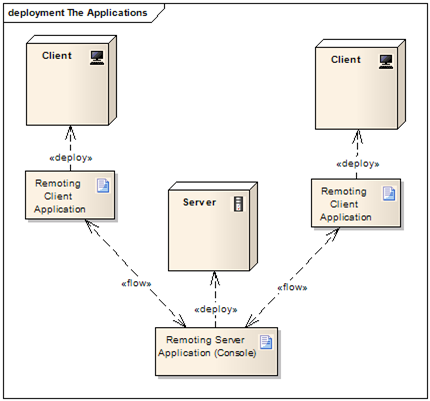
Documents the physical hardware used to deploy the application
Component diagram
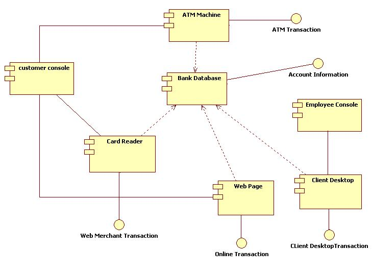
Documents the relationship between the different components of the system
Activity diagram
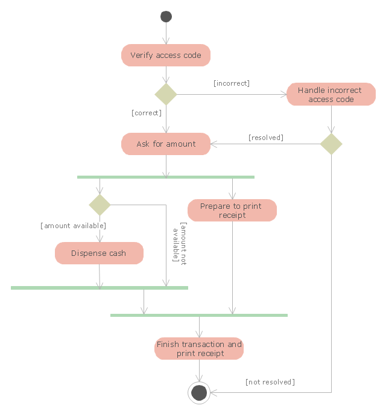
Documents system activities and actions using workflows for representing choice, iteration and concurrency
Statechart diagram
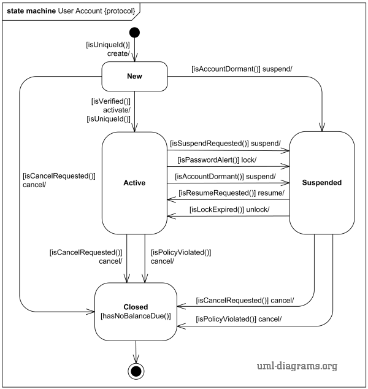
Documents the states of system components as well as the transitions between them